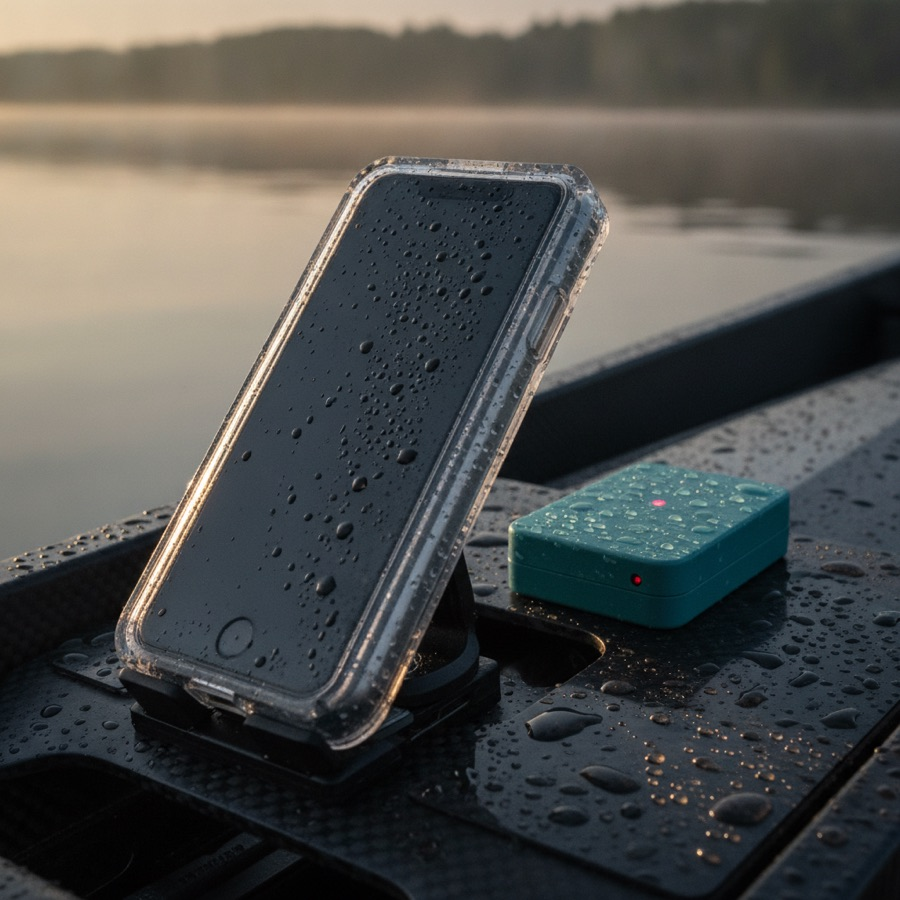

6:24
Device

CONNECTED
StrokeBox 01
Clipped to the footplate deck
86%
Phone sensors
StrokeBox
100
Hz
sample rate
6
axis
accel + gyro
14
files
synced
Mount check
Recalibrate
Level
1.2°
Points to bow
3° off
Strap
Tighten
Export raw data
Acceleration, stroke times, cue labels
CSV
Home
Tests
Squad
Device